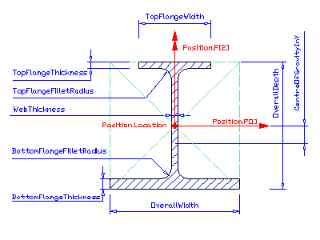

8.15.3.4 IfcAsymmetricIShapeProfileDef
| Définition de section d'un profil en I assymétrique |
| assymetrisches I-Profil - parametrische Definition |
IfcAsymmetricIShapeProfileDef
defines a section profile that provides the defining parameters of a
singly symmetric I-shaped section. Its parameters and orientation relative to the
position coordinate system are according to the following illustration.
The centre of the position coordinate system is in the profile's centre
of the bounding box.
The overall width of the profile is implicitly given by the maximum of
the bottom flange width and the top flange width.
IfcAsymmetricIShapeProfileDef can also be used to model rail profiles
if the application scenario does not require a full explicit shape model of the
rail profile. Alternatively, IfcArbitraryClosedProfileDef can be
used to provide the exact shape of rail profiles. Either way, a reference
to an external document or library should be provided to further define the
profile as described at IfcProfileDef.
HISTORY New entity in IFC2x2.
IFC2x3 CHANGE All profile origins are now in the center of the bounding box. The attribute CentreOfGravityInY has been made OPTIONAL.
IFC4 CHANGE
Supertype changed from IfcIShapeProfileDef to IfcParameterizedProfileDef. Attributes which were inherited from IfcIShapeProfileDef are now defined directly at IfcAsymmetricIShapeProfileDef and have been partially renamed but were not reordered.
Bottom flange may be narrower than top flange.
Type of TopFlangeFilletRadius relaxed to allow for zero radius.
Trailing attribute CentreOfGravityInY deleted, use respective property in IfcExtendedProfileProperties instead.
Attributes BottomFlangeEdgeRadius, BottomFlangeSlope, TopFlangeEdgeRadius, TopFlangeSlope added.
Figure 357 illustrates parameters of the asymmetric I-shaped section definition. The parameterized profile defines its own position coordinate system. The underlying coordinate system is defined by the swept area solid that uses the profile definition. It is the xy plane of:
- IfcSweptAreaSolid.Position
By using offsets of the position location, the parameterized profile can be positioned centric (using x,y offsets = 0.), or at any position
relative to the profile. The parameterized profile is defined by a set of parameter attributes. In the illustrated example, the 'CentreOfGravityInY' property in IfcExtendedProfileProperties, if provided, is negative.
 |
Figure 357 — Assymetric I-shape profile |
XSD Specification:
<xs:element name="IfcAsymmetricIShapeProfileDef" type="ifc:IfcAsymmetricIShapeProfileDef" substitutionGroup="ifc:IfcParameterizedProfileDef" nillable="true"/>
<xs:complexType name="IfcAsymmetricIShapeProfileDef">
<xs:complexContent>
<xs:extension base="ifc:IfcParameterizedProfileDef">
<xs:attribute name="BottomFlangeWidth" type="ifc:IfcPositiveLengthMeasure" use="optional"/>
<xs:attribute name="OverallDepth" type="ifc:IfcPositiveLengthMeasure" use="optional"/>
<xs:attribute name="WebThickness" type="ifc:IfcPositiveLengthMeasure" use="optional"/>
<xs:attribute name="BottomFlangeThickness" type="ifc:IfcPositiveLengthMeasure" use="optional"/>
<xs:attribute name="BottomFlangeFilletRadius" type="ifc:IfcNonNegativeLengthMeasure" use="optional"/>
<xs:attribute name="TopFlangeWidth" type="ifc:IfcPositiveLengthMeasure" use="optional"/>
<xs:attribute name="TopFlangeThickness" type="ifc:IfcPositiveLengthMeasure" use="optional"/>
<xs:attribute name="TopFlangeFilletRadius" type="ifc:IfcNonNegativeLengthMeasure" use="optional"/>
<xs:attribute name="BottomFlangeEdgeRadius" type="ifc:IfcNonNegativeLengthMeasure" use="optional"/>
<xs:attribute name="BottomFlangeSlope" type="ifc:IfcPlaneAngleMeasure" use="optional"/>
<xs:attribute name="TopFlangeEdgeRadius" type="ifc:IfcNonNegativeLengthMeasure" use="optional"/>
<xs:attribute name="TopFlangeSlope" type="ifc:IfcPlaneAngleMeasure" use="optional"/>
</xs:extension>
</xs:complexContent>
</xs:complexType>
EXPRESS Specification:
|
ENTITY IfcAsymmetricIShapeProfileDef
|
|
|
| ValidFlangeThickness | : | NOT(EXISTS(TopFlangeThickness)) OR ((BottomFlangeThickness + TopFlangeThickness) < OverallDepth); | | ValidWebThickness | : | (WebThickness < BottomFlangeWidth) AND (WebThickness < TopFlangeWidth); | | ValidBottomFilletRadius | : | (NOT(EXISTS(BottomFlangeFilletRadius))) OR
(BottomFlangeFilletRadius <= (BottomFlangeWidth - WebThickness)/2.); | | ValidTopFilletRadius | : | (NOT(EXISTS(TopFlangeFilletRadius))) OR
(TopFlangeFilletRadius <= (TopFlangeWidth - WebThickness)/2.); |
|
 EXPRESS-G diagram
EXPRESS-G diagram
Attribute Definitions:
| BottomFlangeWidth | : | Extent of the bottom flange, defined parallel to the x axis of the position coordinate system. |
| OverallDepth | : | Total extent of the depth, defined parallel to the y axis of the position coordinate system. |
| WebThickness | : | Thickness of the web of the I-shape. The web is centred on the x-axis and the y-axis of the position coordinate system. |
| BottomFlangeThickness | : | Flange thickness of the bottom flange. |
| BottomFlangeFilletRadius | : | The fillet between the web and the bottom flange. 0 if sharp-edged, omitted if unknown. |
| TopFlangeWidth | : | Extent of the top flange, defined parallel to the x axis of the position coordinate system. |
| TopFlangeThickness | : | Flange thickness of the top flange. This attribute is formally optional for historic reasons only. Whenever the flange thickness is known, it shall be provided by value. |
| TopFlangeFilletRadius | : | The fillet between the web and the top flange. 0 if sharp-edged, omitted if unknown. |
| BottomFlangeEdgeRadius | : | Radius of the upper edges of the bottom flange. 0 if sharp-edged, omitted if unknown. |
| BottomFlangeSlope | : | Slope of the upper faces of the bottom flange. Non-zero in case of of tapered bottom flange, 0 in case of parallel bottom flange, omitted if unknown. |
| TopFlangeEdgeRadius | : | Radius of the lower edges of the top flange. 0 if sharp-edged, omitted if unknown. |
| TopFlangeSlope | : | Slope of the lower faces of the top flange. Non-zero in case of of tapered top flange, 0 in case of parallel top flange, omitted if unknown. |
Formal Propositions:
| ValidFlangeThickness | : | The sum of flange thicknesses shall be less than the overall depth. |
| ValidWebThickness | : | The web thickness shall be less than either flange width. |
| ValidBottomFilletRadius | : | The bottom fillet radius, if given, shall be within the range of allowed values. |
| ValidTopFilletRadius | : | The top fillet radius, if given, shall be within the range of allowed values. |
Inheritance Graph:
|
ENTITY IfcAsymmetricIShapeProfileDef
|
 Link to this page
Link to this page